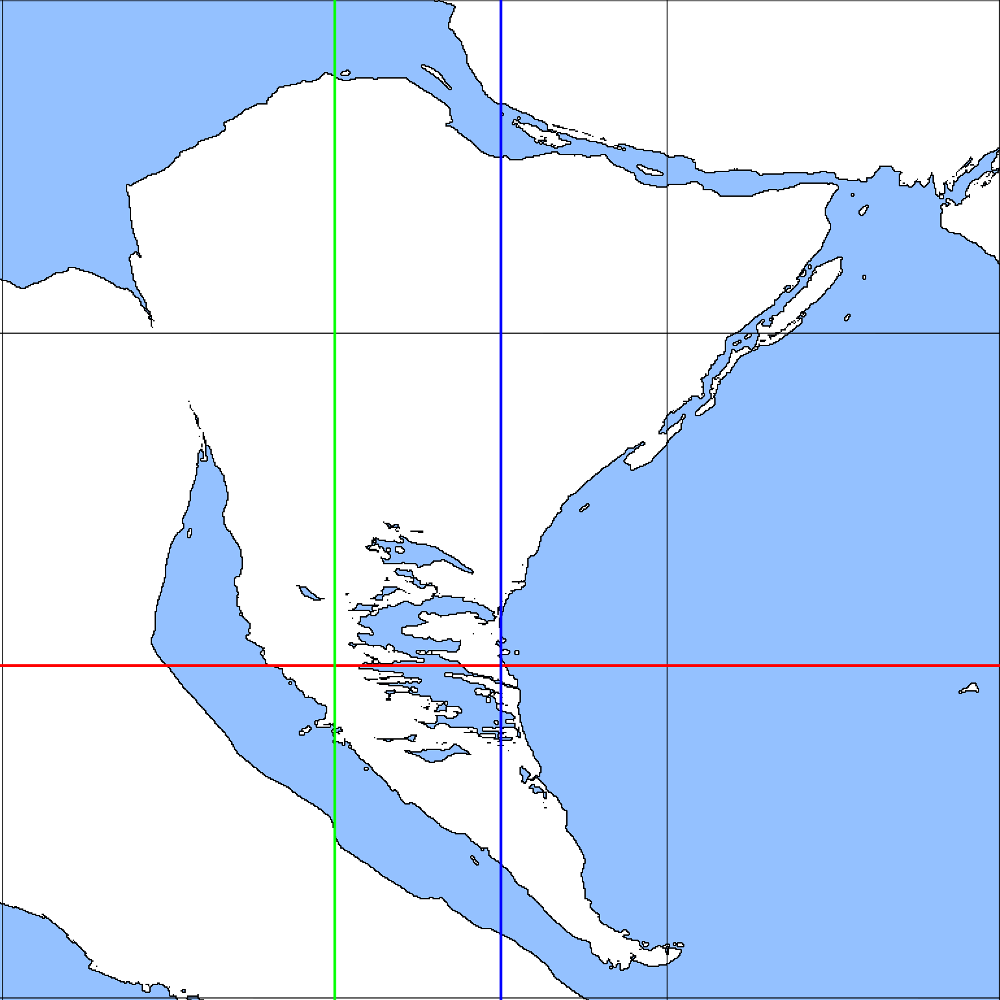

白露
出典: フリー個人网站『イデオアベス(Ideoaves)』
|
白露 どぢえ | |
|---|---|
 大陸面を正面にした白露
大陸面を正面にした白露
|
|
| 分類 | 惑星 |
| 軌道要素 | |
| 主星 | VN 2122 |
| 主星からの距離 | |
| 平均 | 887,098,648 km |
| 近点 | 882,000,168 km |
| 遠点 | 892,197,129 km |
| 公転周期 | 3,710 日 |
| 自転周期 | 38.4 時間 |
| 自転傾斜角 | 23.4° |
| 衛星の数 | 1 (pola) |
| 衛星からの距離 | 580,111 km |
| 物体 | |
| 温度 | |
| 平均 | -29 ℃ |
| 最高 | 58 ℃ |
| 最低 | -121 ℃ |
| 赤道半径 | 11,862.711 km |
| 極半径 | 11,881.132 km |
概要
主星から近い順に3番目の惑星である。直径は星系内の全惑星の中で5番目に大きく、岩石惑星の中では2番目に大きい。ハビタブルゾーン内の外側を公転しており、液体の水及び大気を有する。環境に適応した生命体が存在し、惑星系内で唯一社会が構築された惑星である。星系は118億年前に誕生し、白露はその後95億年前に形成された。同時期に衛星polaも誕生したと考えられている。
物理的性質
運動
軌道面から22.4°傾き、約38.4時間に1回自転する。主星から平均5.93 AUの距離をほぼ円状の軌道で周回し、約3710日で1回公転する。偏心0.00575で、0.0104°ほどの傾斜が有る。近点が5.90 AU、遠点が5.96 AUである。物質
赤道半径は約11,863 kmで、極半径は約11,881 kmと、約18 kmの差がある。固体部は主にケイ素や酸素、金属などから成り、平均密度は3258 kg/m3と軽く、金属量が少ない。また、液体の水を持つ。地表表面には約2気圧程の大気が覆っている。大気成分は窒素75%、酸素23%、アルゴン1%、そして少量の希ガス等で構成される。
衛星
白露は恒久的に衛星polaを一つ持つ。既に周回軌道を外れた自然衛星は3例が確認されており、いずれも6~10mの大きさの小惑星である。伝説上に「第二のpola」が登場することが多いが、現在までに1kmを超える衛星が見つかったことはない。運動のシミュレーション
pola
|
pola ぽぁ | |
|---|---|
 満ち欠けするpola
満ち欠けするpola
|
|
| 分類 | 衛星 |
| 軌道要素 | |
| 主星 | 白露 |
| 主星からの距離 | |
| 平均 | 623,790 km |
| 近点 | 555,053 km |
| 遠点 | 692,528 km |
| 公転周期 | ー 日 |
| 自転周期 | ー 時間 |
| 自転傾斜角 | ー° |
| 衛星の数 | 0 |
地上からの観測
白露と比較して1/4.5程度の大きさを持つ。これは他の惑星と衛星の比に対して非常に大きい。約29日で1回公転する。自転速度と回転速度が釣り合っているため、地上からは片方からの面のみ見ることができる。ただし、微細な秤動が有るため15度ほど赤道方向の傾きを見ることができる。
満ち欠けと秤動
春の洞には比較的新しいクレーターがあり、このクレーター周辺に放射状の溝が出来ている。この周囲は切立った崖であり、polaにある山脈としては最も高く、かつ急である。この山脈の一部は満ち欠けの際にしばらく光に当たり続けるため、地上からでも影内に光点を見ることができる。
満ち欠けが18日ほどの周期で観測でき、これが暦の月として反映されている。ただし、実際には1月につき0.1日ほどずれがあるため、6月ごとに1日挿入される（19の月）。つまり、1年のうちに19日が21回ある。
白露の公転軌道に対してpolaの軌道面が比較的強く離れているため、上下方向に影ができる。このため最も完全な満月を見ることができるのは、月食が発生する1ヶ月前か、発生した一ヶ月後になる。
白露の地理

正距円筒図法で変形した地表写真
大陸は0度側に偏っており、この面を大陸面、反対側を海洋面と呼ぶことがある。なお、大陸中心の人口密集地を基準に経度を制定したためキリの良い状態になっており、偶然0度と大陸面の中心が重なっているわけではない。また、最も汎用的な世界地図では、実際の0度から22.5度西にずれている。これは地学的な基準と行政的な基準が同様にずれているためであり、また最も地図の端に陸を含めずに済むためである。
プレートが動作に追従しているものを一つにまとめると8つあり、うち5つが大陸プレートである。ただし、大陸プレート同士の衝突により、ゼロ度大陸プレートの沈み込みが発生していたり、青島プレートでは沈み込みと衝突が同時に発生しているなど、一概に大陸プレートと海洋プレートに分別することはできない。便宜上、このような沈み込みのある地域（上記の青島プレートや赤島プレートなど）を島プレートとして別に考える場合もある。組成としては大陸プレートに近い。
大陸プレートが経度0度付近に密集しており、それらが互いに離れていることから、元は一つの超大陸だったと考えられている。ただし、青島プレートは南極から北上しており、完全な超大陸ではなかったと思われる。
ゼロ度大陸

座標線の入った地図上のゼロ度大陸。赤道は赤色、子午線は緑、時間線は青で表される。
ゼロ度大陸は白露の大陸面の中心に位置する大陸。旧来は中央大陸、核大陸等と呼ばれていた。座標線の入った地図上のゼロ度大陸。赤道は赤色、子午線は緑、時間線は青で表される。
赤道と子午線が直交し、かつ赤道と時間線が直交する点のある地域であり、時間的、空間的に0度の地点がそれぞれ存在する。このことからゼロ度大陸という呼び方がなされ、他の大陸呼称にも近似した角度を使う風習ができた。
ちなみに、ゼロ度大陸（と三度大陸）のほぼ全域を埋めている、行政区分上の呼称である「緑色地域」は、子午線を表現する際によく用いられる緑色の線から来ている。
地理上は断層を挟んで別の大陸プレートと地続きになっているが、基本的に山脈を境に別の地域として扱われる。
面積は惑星全体の表面積の約2％、陸地面積の7%にあたる。対して人口は惑星総人口の68%で、人口数及び人口密度が最多の地域。
白露の文明
一日の惑星地表の映像。白黒部分は夜間で、強い白色の光は照明。
国

管理区域（地上及び海上のみ）を地図上で分割した図。
地域としての「国」
管理区域とは、共通の法適用（主に憲法）が行われる地域を指す。管理区域は三次元の空間であり、陸上、海上だけでなく、空中、海中に渡って定義される。境界線は法の内容や共同管理、委託管理によってそれぞれ場所が変わる。
現在では、法適用地域が、憲法によって定められた地域と、それぞれの法が参照する地域が基本的に同じであるため、おおよそ明確な境界線が存在する。そのため、世界地図の描写においては憲法に存在する地域区分をもとに境界線を描く慣習がある。この時、憲法内のどの地域を選択するかは地図会社によって違うが、主に一次産業系の法で定められている地域を使う事が多い。
管理区域とは別に、文化地域という意味合いでの「国」もある。これは人種や言語で分ける方法であり、法によってはこの区分けに準じたものも存在する。この場合、国の基準は土地ではなく国民となる。
人・集団としての「国」
広義的には管理区域内のすべての人を指すが、一般的にはその内の管理者、管理団体を指す。管理団体は憲法などを管理する個人・団体であり、地域上の区分けではない。主に外交においてこの意味合いでの国が用いられる。管理集団と管理区域は基本的に1:1で成り立っているが、憲法によっては管理区域が複数の場合もある。この際、管理集団を複数とするか、管理区域の分割を国ではなく県として扱うかは、当事国自身も含めたそれぞれの国の裁量によって決まる。
特殊な国
国の成立条件に客観的なものがないため、定義によってはどのような国も理論上は成立し得る。現在は国共同体や同盟による国の固定化が促進されているため、特殊な理由がない限り新しく国を長期間成立させることは難しい。世界社会から認められる特殊な国としては、一つの会社・企業が自らの所有する地域と書類をもとに、主に輸出入を円滑にするために成立する「企業国」、重要な犯罪の取締や大規模な共同管理などで数日～数ヶ月のみ成立する「短期国」などがある。それらの国は、たいていはその地域の元の国と共同体関係にある場合が多い。
ゼロ度大陸
400年頃、北部の砂漠地域で最初の文明が発生している。800年頃には簡単な合金製造が行われていた形跡がある。都市国家の出現は900年頃で、文教や現在のアルファベットの前身の文字などが誕生した。また、山脈を隔てた三度大陸北部との交易拠点となっており、赤道付近の文化拡散によって急激に哲学が発展した。
1050年頃に複数の民族による南への大移動や開拓があり、それによって大陸の殆どが明文化された歴史上居住域となった。ただし、大移動の起こる前から南方には多くの遊牧民族が生活しており、実質的には500年頃には既に居住域だった可能性が高い。
5000季現在では文化・民族ともに混淆しており、東北一部を除く全域で同盟による統一がなされている。なお、この同盟には三度大陸の殆どの国も含まれている。

第１南北大橋。大湖には高速鉄道の路線としていくつかの橋がかけられている。
最終更新 2023年11月24日 (金) 14:52
（日時は個人設定で未設定ならばUTC）。
テキスト、画像はクリエイティブ・コモンズ表示-継承ライセンスの下で利用可能です。追加の条件が適用される場合があります。
テキスト、画像はクリエイティブ・コモンズ表示-継承ライセンスの下で利用可能です。追加の条件が適用される場合があります。